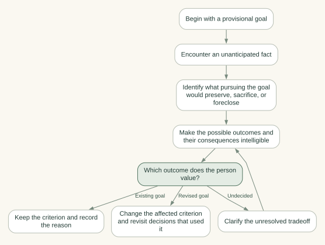

A ’67 Chevy — discovering what you actually want
You open the dash and find an old modification your father made. Until that moment, “restore it” meant returning the car to factory condition. The service manual shows the original layout. Aura Pro can show you which steps in the restoration plan would remove his work. The owner asks the person at the dash to pause removal while the other restoration work continues. The owner accepts what the comparison with the service manual establishes. Returning this dash to factory condition would remove the father’s work. The owner then chooses to preserve it. That decision sets the criterion for the dashboard restoration. The owner gives the restorer the revised instruction, and the restorer resumes the wiring with the reason for keeping it on record.
The question
Starting condition. There is a provisional goal. A discovery exposes a value or a conflict the original goal failed to express. Central question. Knowing this, what outcome does the person actually want?
Decision path


Output. A confirmed or revised definition of success. Evidence can reveal a choice. The person whose intent is at stake resolves the value judgment.
Related system capabilities
Intent and authority
Define the desired result, the decisions people retain, and the work they delegate.
Reasoning and inquiry
Choose which question deserves attention and which method can answer it.
Project memory and learning
Retain the reasons, evidence, and conditions that can improve a later decision.
Human and agent interfaces
Give each participant the information and actions appropriate to their role.